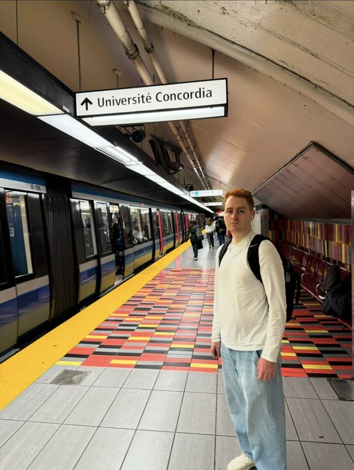

About Me

My name is Ricardo, I am a computer science student at Concordia University in downtown Montréal.
I enjoy learning about how hardware interacts with software in order to mask abstractions. Naturally,
this led me to programming in assembly language, C/C++, learning about
operating systems, kernels, computer architecture. CPUs are silently carrying today's world.
Outside of school, I enjoy learning languages, reading novels, keeping up with motorsports and football,
playing videogames, attending electronic music concerts, going to the gym, spending time with loved
ones, and taking
care of my cat Stella.
While completing university and kickstarting my software journey, I try to make the most out of living
in Montreal. Its the perfect city to ride your bike and try new coffee shops.